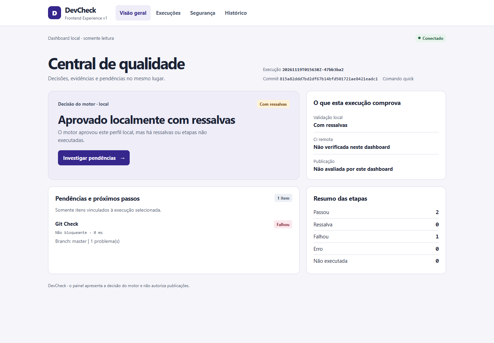

Configuração e execução
Uma configuração validada define o perfil e as etapas da CLI. As checagens dependem das ferramentas presentes no ambiente e da política escolhida.
Estudo de caso · Python e qualidade de software
Uma ferramenta para organizar verificações, entender pendências e acompanhar execuções no ambiente local.
Alpha · 3.0.0a6 · repositório privado
Problema e solução
O DevCheck é uma ferramenta em Python para reunir verificações de qualidade antes do push. Seu objetivo é organizar o retorno de testes, diagnósticos e outras checagens, mantendo visíveis o resultado, as pendências e as evidências de cada execução.
A CLI carrega uma configuração validada e executa etapas conforme o perfil escolhido. O projeto distingue falhas bloqueantes, ressalvas e erros operacionais. Cada execução pode gerar um relatório e um registro próprio, consultados por um dashboard local com histórico, logs e atualizações por eventos. A aprovação local tem o alcance da política executada; a publicação exige uma decisão separada.
Tecnologias: Python, unittest, coverage.py, Ruff, HTTP local, Server-Sent Events, HTML, CSS, JavaScript e GitHub Actions.
Na validação da candidata alpha em Windows com Python 3.12, a suíte contabilizou 196 testes, sem falhas na execução final e com cinco registros de skip por restrição de symlinks. A cobertura agregada foi de aproximadamente 83%. Também passaram sete cenários da CLI e o roteiro de navegador em três larguras. Os resultados e seus limites estão descritos no resumo de evidências.
Idealizei o DevCheck e conduzi o desenvolvimento com o Codex, usando IA em todas as etapas da implementação. Meu foco atual é compreender o código para explicar e demonstrar suas decisões técnicas.
A captura do dashboard mostra dados fictícios e uma aprovação com ressalvas. É uma demonstração visual, sem aplicação pública interativa. O projeto continua em avaliação; os comprovantes completos de CI permanecem privados.
Arquitetura e decisões técnicas
Uma configuração validada define o perfil e as etapas da CLI. As checagens dependem das ferramentas presentes no ambiente e da política escolhida.
PASS, FAIL, WARN, SKIPPED e ERROR distinguem aprovações, falhas, ressalvas, etapas não executadas e erros operacionais. Um skip não é uma aprovação.
Os registros de execução organizam histórico, relatórios e logs. O dashboard acompanha essas informações por HTTP local e Server-Sent Events.
O resultado de uma etapa alimenta a decisão da política executada. A aprovação local, a situação da CI remota e a autorização de publicação são decisões distintas.
Minha participação: idealização e condução do desenvolvimento com o Codex, com implementação assistida por IA em todas as etapas. As capacidades do software e os resultados dos testes não equivalem a domínio individual de todo o código.
Resultados e rastreabilidade
Os dados abaixo são registros da validação documentada em 18/11/2026 para a candidata alpha 3.0.0a6. Derivam de validação local assistida pelo Codex e de consulta a resultados existentes de uma CI privada. Não representam uma nova execução nem uma auditoria externa do produto.
| Verificação | Resultado e alcance |
|---|---|
| Suíte Python | 196 testes contabilizados, sem falhas na execução final; cinco registros de skip por restrição de criação de symlinks. |
| Cobertura | 83,0147% agregada; statements 85,02%; branches 78,13%. Os denominadores são diferentes. |
| Contratos da CLI | Sete cenários em processos separados aprovados. |
| Análise estática | Ruff aprovado na validação registrada. |
| Dashboard | Roteiro de navegador concluído com Chrome em 320, 390 e 1440 pixels. |
| CI privada | Seis jobs de validação e um agregador com sucesso registrado. Consulta a execuções existentes; comprovantes completos não estão disponíveis publicamente. |
Os cinco skips incluem três subcasos de um teste e dois outros testes, todos por falta de privilégio para criar symlinks no Windows. Eles não foram contados como aprovações; subtrair cinco de 196 não produz uma contagem válida de métodos aprovados.
A primeira tentativa teve duas falhas ligadas à localização dos diretórios temporários dentro de outra árvore Git. A execução final ajustou o ambiente de temporários e ferramentas, preservando o produto e as expectativas dos testes. O relato completo consta no documento abaixo.
A validação usou a árvore-fonte e ferramentas existentes. Não houve nova instalação limpa do produto, reconstrução do wheel ou auditoria online completa de dependências. Os comprovantes e identificadores completos permanecem privados.
Demonstração visual estática
A captura ilustra como o dashboard apresenta uma decisão local com ressalvas e uma pendência. Os dados e identificadores exibidos pertencem a um cenário de teste fictício.

Maturidade e aprendizado
O DevCheck permanece uma candidata alpha em avaliação, com repositório privado. O material apresentado não comprova uso comercial, adoção por equipes, redução quantitativa de bugs ou operação multiusuário em produção.
Os testes de navegador registrados não substituem auditoria completa de acessibilidade, testes com tecnologias assistivas ou dispositivos físicos. A instalação limpa do produto e a compreensão individual do código exigem verificações próprias.
Meu aprendizado atual se concentra em compreender e justificar as decisões, investigar falhas e realizar pequenas alterações com testes. A condução do desenvolvimento com IA é parte explícita dessa trajetória.